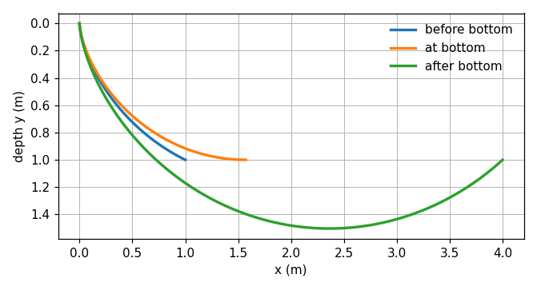
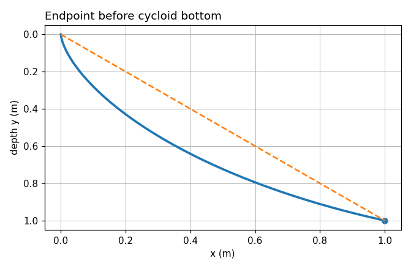
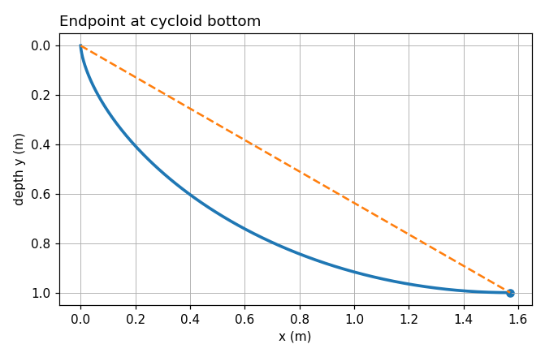
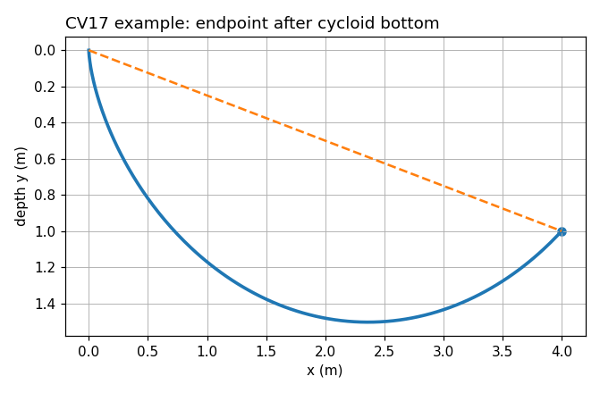

PhysicsLibrary CV17 computational resource
Brachistochrone Cycloid and Travel Time
A bead released from rest follows a cycloid under gravity. Compare its descent with a straight path to the same endpoint.
Reference endpoint
All reference cases use a vertical drop of Y = 1 m.
1
Cycloid and straight-line comparison
Depth increases downward.
time-s
x-m
depth y-m
speed-m/s
2
Travel-time comparison
cycloid-s
straight-s
saving-%
3
Numerical travel-time convergence
segments-
estimate-s
relative error-%
4
Endpoint-root solve
iteration-
midpoint theta-rad
bracket width-rad
|residual|-
Reference cases

The after-bottom case is the CV17 numerical example, X = 4 m and Y = 1 m.
Saved data and source
Download Julia projectProvenanceLicenseEndpoint-ratio sweep CSVTravel-time convergence CSVBisection history CSV
Generated with Julia 1.10.12.
Before bottom

At bottom

After bottom
